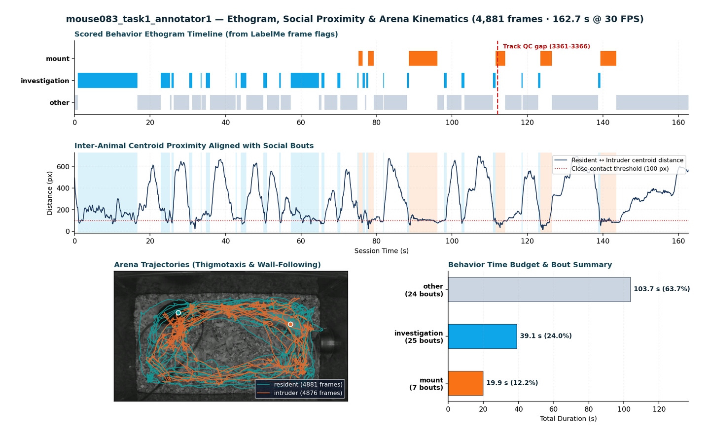

Reporting, Statistics & Analysis Studio¶
Annolid provides a unified stack for multi-animal track quality control, calibrated kinematics, freezing detection, spatial zone analysis, inter-rater reliability (IRR), inferential cohort statistics, and self-contained HTML5/SVG scientific reporting across the GUI, annolid-run CLI, and Annolid Bot tools.
1. GUI Workbench: Analysis & Reporting Studio¶
Open Analysis -> Analysis & Reporting Studio… (Ctrl+Shift+R) in the main Annolid window (or click Studio… from the Behavior Log dock).
The non-modal studio runs computations on background worker threads so the main video canvas stays responsive, and provides six integrated tabs:
- Unified Report: Generates
analysis_report.html(with deterministic inline SVG arena trajectories, freezing/active budgets, zone occupancy bars, and BORIS-style ethogram rasters),analysis_report.md, andanalysis_report.json(unified_analysis_report/v1). - Track QC & Gaps: Audits tracking CSVs or frame JSON folders for velocity spikes, identity swaps, area jumps, pose bone stretch, and missing-frame gaps.
- Kinematics & Freezing: Computes physical (
cm,cm/sviapx_per_cm) and pixel kinematics, straightness/tortuosity, freezing & high-activity bouts, and pairwise inter-animal proximity. - Behavior & Ethogram QC: Summarizes interval-union time budgets, binned trajectories, and unpaired/exclusive ethogram alerts.
- Inter-Rater Reliability (IRR): Evaluates 2+ rater event CSVs with Cohen's $\kappa$ (plus bootstrap 95% CI), Fleiss' $\kappa$, Krippendorff's $\alpha$, PABAK, bout onset/offset F1, and contiguous disagreement bouts.
- Cohort & Transitions: Computes between-group hypothesis tests, standardized effect sizes, Kaplan-Meier censored latency survival, Benjamini-Hochberg FDR $q$-values, and first-order Markov transition matrices.
Interactive Frame Navigation: Double-clicking any row in the Track QC review queue, Tracking Gaps, Kinematics Bouts, Behavior QC Alerts, or IRR Disagreements tables jumps the main Annolid canvas directly to that frame.
Live Worked Example (mouse083_task1_annotator1)¶
Inspect an actual unified HTML5 + inline SVG report generated by annolid-run report on the 4,881-frame mouse083_task1_annotator1 resident-intruder assay:


2. annolid-run CLI Reference¶
# 1. Unified HTML5 + inline SVG + Markdown + JSON report
annolid-run report session.mp4 \
--events-csv session_events.csv \
--zone-file session_zones.json \
--fps 30 \
--px-per-cm 12.5 \
--output-dir ./session_report
# 2. Calibrated trajectory kinematics, freezing bouts, and pairwise social distance
# Supports scalar --px-per-cm OR planar perspective homography (--calibration)
annolid-run kinematics session_tracking.csv \
--fps 30 \
--calibration arena_calibration.json \
--output-dir ./kinematics_out \
--events-csv kinematics_bouts.csv
# 3. Spatial zone / place-preference / social summary (polygons, rectangles, and 2-point circles)
annolid-run zone-analysis session.mp4 \
--zone-file session_zones.json \
--profile open_field \
--mode assay_summary \
--events-csv zone_visits.csv
# 4. Standalone anatomical body-part posture & directed contact ethogram
annolid-run body-part-ethogram ./session/ \
--fps 30 \
--output-prefix ./ethogram/session \
--events-csv body_part_events.csv
# 5. Per-instance tracking gap report (works on videos, tracking CSVs, or JSON folders)
annolid-run gap-report session_tracking.csv --fps 30 --out-json gaps.json
# 6. Multi-video *_tracking_stats.json telemetry dashboard
annolid-run tracking-stats ./project_videos/ --output-dir ./stats_dashboard
# 7. Behavior time budget with BORIS Out-of-Sight subtraction, external photometry/sensor alignment, & SVG/DOT
annolid-run time-budget session_events.csv \
--schema project.annolid.json \
--session-duration 600 \
--exclude-behaviors out_of_sight,occluded \
--bin-size 60 \
--external-data photometry_dff.csv \
--external-offset 0.25 \
--external-data-svg photometry_aligned.svg \
--cooccurrence-csv cooccurrence.csv \
--ethogram-svg ethogram.svg \
--transitions-dot transitions.dot \
--transitions-svg transitions.svg \
-o time_budget.csv
# 8. Bidirectional BORIS (.boris / Tabular CSV / Aggregated CSV) import & export
annolid-run boris-import study.boris \
--output-dir ./annolid_from_boris \
--group-variable Treatment
annolid-run boris-export session_events.csv \
--schema project.annolid.json \
--format boris \
--output session.boris
# 9. Inter-Rater Reliability with bootstrap 95% CIs, Krippendorff's alpha, and disagreement CSV
annolid-run behavior-irr rater1.csv rater2.csv \
--bin-seconds 0.1 \
--disagreements-csv disagreements.csv \
--out irr_report.json
# 10. Multi-recording cohort inferential comparisons & transition diagrams
annolid-run behavior-cohort ./annolid_from_boris/cohort_manifest.json \
--unit recording \
--session-duration 600 \
--summary-csv cohort_summary.csv \
--comparisons-csv cohort_comparisons.csv \
--transitions-csv cohort_transitions.csv \
--transitions-dot cohort_transitions.dot \
--transitions-svg cohort_transitions.svg \
--out cohort_report.json
3. Inferential Cohort & IRR Methods¶
- Experimental Unit (
--unit recordingvs--unit subject): In dyadic or group-housed recordings (resident+intruder), co-housed animals share variance. Setting--unit recordingaggregates within-recording totals/rates first so recordings act as the independent experimental unit. - Hypothesis Tests & Effect Sizes (
CohortComparisonRow): - 2 groups: Welch's unequal-variance $t$-test, Mann-Whitney $U$, Hedges' $g$, Cliff's $\delta$, bootstrap 95% CI on mean difference, Fisher exact / $\chi^2$ responder incidence test, and Mantel-Cox log-rank test on right-censored first-bout latencies.
- 3+ groups: One-way ANOVA $F$-test, Kruskal-Wallis $H$-test, Pearson $\chi^2$ responder contingency test, and $k$-sample Mantel-Cox log-rank test. All parametric, nonparametric, contingency, and survival tail probabilities include exact pure-Python/NumPy incomplete-beta and incomplete-gamma engines (
_betainc_reg,_gammaincc_reg) so 2-group and $\ge 3$-group p-values remain exact even whenscipyis not installed. - Multiple Comparisons: Benjamini-Hochberg FDR-adjusted $q$-values (
q_parametric_bh,q_nonparametric_bh) across all behavior endpoints. - Spatial Calibration (
px_per_cm& Planar Perspective Homography): - Uniform orthographic scale via
--px-per-cm <float>, or full $3 \times 3$ planar perspective homography via--calibration <file.json>(PlanarCalibrationinannolid.postprocessing.spatial_calibration). - Calibration JSON files may specify
{"src_points_px": [[x1,y1], ...], "width_cm": 50.0, "height_cm": 50.0}, arbitrary $\ge 4$-point correspondences{"src_points_px": [...], "dst_points_cm": [...]}, an explicit $3 \times 3$"homography"matrix, or a LabelMe/Annolid_zones.jsonshape withflags: {"width_cm": 50.0, "height_cm": 50.0}. Areas incm^2are scaled by the exact local projective Jacobian determinant $|\det J_H(x, y)|$. - Inter-Rater Reliability (
IRRReport): - Pairwise Cohen's $\kappa$ with block-bootstrap 95% confidence intervals, multi-rater Fleiss' $\kappa$, prevalence-adjusted PABAK, binary Krippendorff's $\alpha$, onset/offset matching F1, and exported
IRRDisagreementBoutwindows for targeted adjudication.
4. Annolid Bot Tools & Slash Commands¶
Inside Annolid Bot (GUI chat, CLI agent, and subagents), group:analysis exposes typed FunctionTools:
annolid_generate_reportannolid_track_qcannolid_kinematics_statsannolid_zone_analysisannolid_behavior_time_budgetannolid_behavior_qcannolid_behavior_irrannolid_behavior_cohortannolid_tracking_stats
Quick chat slash shortcuts:
/stats [path] [px_per_cm=12.5] [calibration=arena_cal.json]— run kinematics or workspace tracking telemetry summary/qc [path]— audit tracking CSV / frame JSONs or behavior event CSV quality/report [path] [px_per_cm=12.5] [calibration=arena_cal.json]— generate unified HTML5 + SVG + Markdown + JSON report